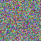

Challenge
A mysterious image from the Soul World contains a message hidden one bit at a time. Recover the concealed Soul Stone fragment.
- Attachment:
soul_world.png- 80×80, 8-bit RGB, non-interlaced PNG (19 KB) - Flag format:
OWASP{...}

Solution
The hint "hidden one bit at a time" points straight at LSB (least-significant
bit) steganography. With three colour channels (R, G, B) per pixel and 80×80
pixels, the image holds 80 × 80 × 3 = 19200 bits = 2400 bytes of capacity -
far more than a flag needs.
Method 1 - zsteg (fast triage)
1zsteg -a soul_world.pngAmong the many candidate bit-planes, one leap out:
b1,rgb,lsb,xy .. text: "OWASP{s0ul_w0rld_h1d3s_1ts_s3cr3t}"Reading b1,rgb,lsb,xy means: bit depth 1, rgb channels in order,
lsb (least-significant bit), xy (row-major pixel order - the default).
Extract raw:
1zsteg -E "b1,rgb,lsb,xy" soul_world.png | strings
2# OWASP{s0ul_w0rld_h1d3s_1ts_s3cr3t}Method 2 - from-scratch extraction (independent confirmation)
solve.py walks every pixel in row-major order, appends the LSB of R, then G,
then B into one long bitstream, and packs it MSB-first into bytes:
1bits = []
2for y in range(h):
3 for x in range(w):
4 r, g, b = px[x, y]
5 bits += [r & 1, g & 1, b & 1] # LSB of each channel, RGB order
6
7out = bytearray()
8for i in range(0, len(bits) - 7, 8):
9 byte = 0
10 for j in range(8):
11 byte = (byte << 1) | bits[i + j]
12 out.append(byte)Output:
Capacity: 19200 bits = 2400 bytes
Raw head: OWASP{s0ul_w0rld_h1d3s_1ts_s3cr3t}
FLAG: OWASP{s0ul_w0rld_h1d3s_1ts_s3cr3t}The newline-terminated flag sits at the very start of the bitstream; the rest is random low-order noise, which is why the message is instantly readable.
Verification
Two independent implementations (zsteg's b1,rgb,lsb,xy decoder and the
hand-written solve.py) produced byte-identical flags - no reliance on a single
tool.
Reproduction
1cd /home/ashton/Downloads/ctfs/Byteme2026/Soul_World
2zsteg -E "b1,rgb,lsb,xy" soul_world.png | strings # quick
3python3 solve.py # from-scratch, self-containedNotes
- No encryption, no compression, no interlace trickery - plain RGB LSB.
b1,rgb,lsb,xyis the canonical first thing to try on any PNG LSB challenge; if that fails, sweep bit depths (b2..b8), channel subsets (r/g/b/bgr), MSB vs LSB, and both xy/yx ordering (all covered byzsteg -a).